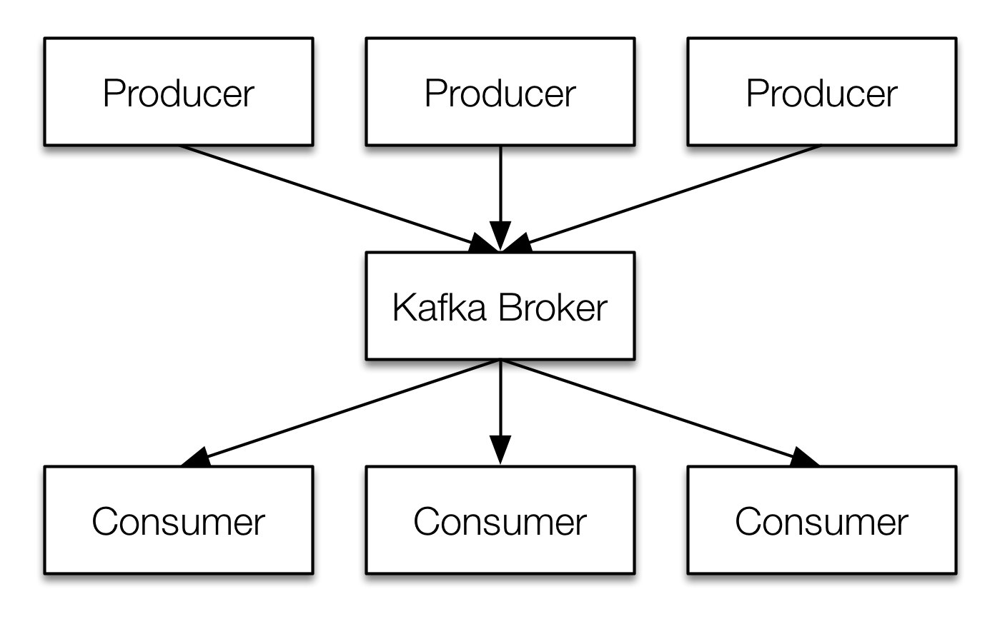
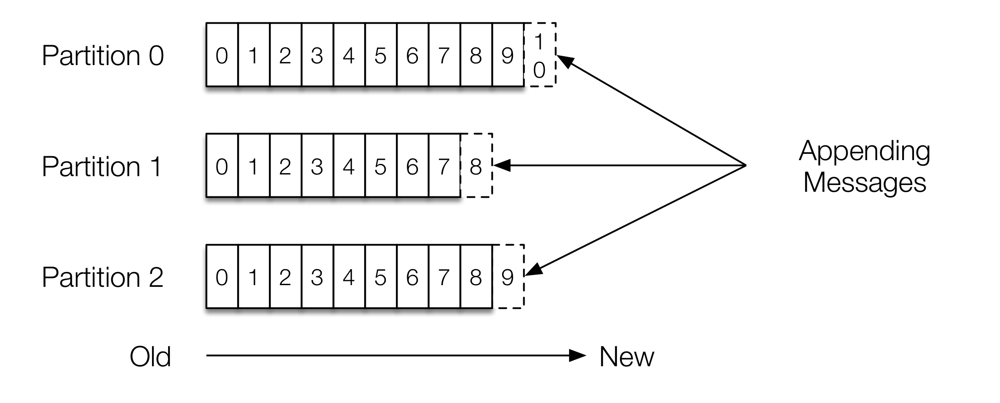
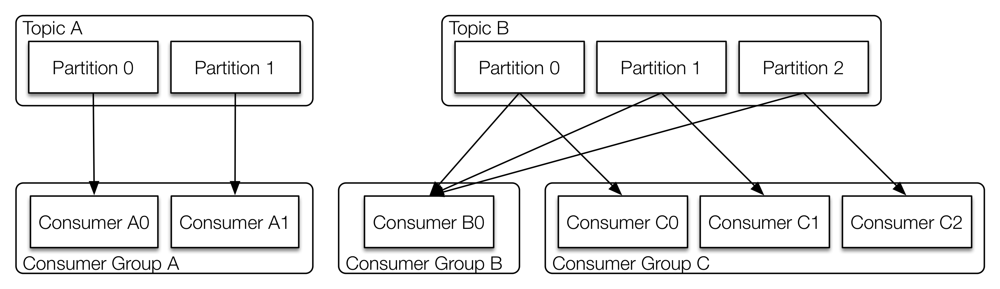
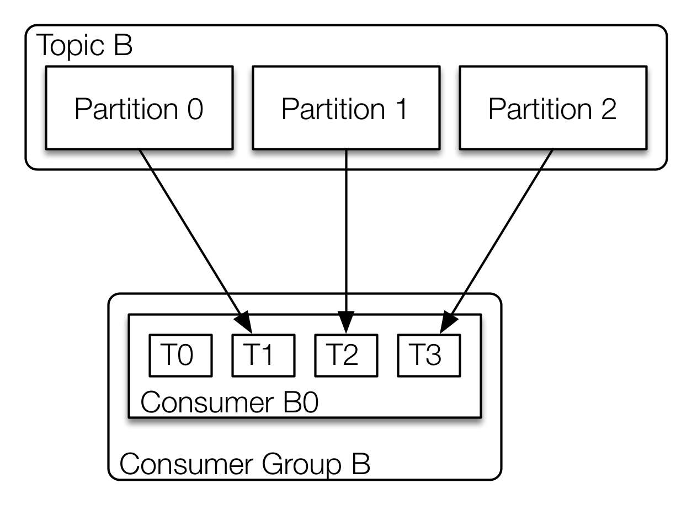

data2day 2015
Massive Datenströme mit Kafka
Frank Wisniewski - @ultraknackig
Lars Pfannenschmidt - @leastangle
$ whoami
Frank Wisniewski
- Futsal playing Engineer @Intuit
- Event-Driven & Real Time Applications
- @ultraknackig
Lars Pfannenschmidt
- Real Time Data Products @Intuit
- Founder of @mobilecgn User Group
- @leastangle
$ ls -al
- Motivation
- Concepts
- Topics & Partitions
- Offset Management
- Log Compaction
- Example
- Producer
- Consumer
- Performance
- Summary
Motivation
high wire 2 by Graeme Maclean - Some rights reserved CC BY 2.0Chaos
„The Log: What every software engineer should know about realtime data's unifying abstraction“ by Jay KrepsOrder
 „The Log: What every software engineer should know about realtime data's unifying abstraction“ by Jay Kreps
„The Log: What every software engineer should know about realtime data's unifying abstraction“ by Jay Kreps
Concepts
1960 Lloyd Arabella by JOHN LLOYD - Some rights reserved CC BY 2.0Overview
 Topological Overview according to Kafka documentationTopics & Partitions
 Anatomy of a topic according to Kafka documentationGuarantees
- Messages sent to a partition will be appended in the order they are seen
- Consumer see messages in the order they are stored in the log
- Kafka will tolerate up to
n-1server failures for a topic with replication factorn
Log Compaction
 Log compaction according to Kafka documentation
Log compaction according to Kafka documentation
Example
Hello World by Bill Bradford - Some rights reserved CC BY 2.0Java Producer
public class News {
public final UUID id;
public final String author, title, body;
...
}
Properties config = new Properties();
config.put(ProducerConfig.BOOTSTRAP_SERVERS_CONFIG, broker);
config.put(ProducerConfig.KEY_SERIALIZER_CLASS_CONFIG, StringSerializer.class.getName());
config.put(ProducerConfig.VALUE_SERIALIZER_CLASS_CONFIG, NewsSerializer.class.getName());
KafkaProducer<String, News> producer = new KafkaProducer<>(config);
public RecordMetadata send(News news) throws ExecutionException, InterruptedException {
ProducerRecord<String, News> record = new ProducerRecord<>(topic, news.id.toString(), news);
Future<RecordMetadata> recordMetadataFuture = this.producer.send(record);
return recordMetadataFuture.get();
}
Message Distribution
Message routing to target partition viaProducerRecord-
Round Robin
ProducerRecord(String topic, V value); -
Via
keyhash (murmur2)ProducerRecord(String topic, K key, V value); -
Via specific partition
ProducerRecord(String topic, Integer partition, K key, V value);
Consumer Grouping
 “Kafka 101 - Massive Datenströme mit Apache Kafka” by Pfannenschmidt and Wisniewski, JavaMagazin 08.2015, p. 38Consumer Threading
 “Kafka 101 - Massive Datenströme mit Apache Kafka” by Pfannenschmidt and Wisniewski, JavaMagazin 08.2015, p. 41Java Consumer Thread
public void run() {
Thread.currentThread().setName(name);
ConsumerIterator<String, News> it = messageStream.iterator();
while (it.hasNext()) {
relayMessage(it.next());
}
}
void relayMessage(MessageAndMetadata<String, News> kafkaMessage) {
logger.trace("Received message with key '{}' and offset '{}' "
+ "on partition '{}' for topic '{}'",
kafkaMessage.key(), kafkaMessage.offset(),
kafkaMessage.partition(), kafkaMessage.topic());
messageConsumer.consume(kafkaMessage.message());
}
public interface NewsConsumer<News> {
void consume(News message);
}
Wiring
import static kafka.consumer.Consumer.createJavaConsumerConnector;
Properties props = new Properties();
props.put("zookeeper.connect", zookeeper); // list of ZooKeeper nodes
props.put("group.id", groupId); // identifies consumer group
props.put("offsets.storage", "kafka"); // storage for offsets
props.put("dual.commit.enabled", "false"); // migration switch
...
ConsumerConnector consumerConnector = createJavaConsumerConnector(new ConsumerConfig(props));
Map<String, List<KafkaStream<String, News>>> consumerMap;
consumerMap = consumerConnector.createMessageStreams(
ImmutableMap.of(topic, numberOfThreads), // number of streams per topic
new StringDecoder(null), new NewsDecoder()); // message key and value decoders
List<KafkaStream<String, News>> streams = consumerMap.get(topic);
// create fixed size thread pool to launch all the threads
ExecutorService pool = Executors.newFixedThreadPool(numberOfThreads);
// create consumer threads to handle the messages
for (final KafkaStream stream : streams) {
String name = String.format("%s[%s]", topic, threadNumber++);
pool.submit(new ConsumerThread(stream, name, consumer));
}
Performance
Grefsenkollen Downhill 2015 by Vegar Nilsen - Some rights reserved CC BY 2.0What makes Kafka fast?
"[Designed] to make consumption as cheap as possible"
What makes Kafka fast?
Fast Writes:
- linear writes
- all writes go to OS pagecache
Fast Reads:
- linear reads
- direct data transport from
pagecache to socket* viasendfile()
Combined → Fast!
* Consumer without lag get messages from pagecache!
More Details: http://kafka.apache.org/documentation.html#persistence
sendfile()?
 Efficient data transfer according to http://www.ibm.com/developerworks/library/j-zerocopy/
Efficient data transfer according to http://www.ibm.com/developerworks/library/j-zerocopy/
Summary
Numbers And Finance by reynermedia - Some rights reserved CC BY 2.0Key Features & Facts
- Commit Log Topics, Partitioning, Log Compaction, Compression & Offset Management
- Real-time High-Throughput & Low-Latency
- Persistence Scalable, centralized & replicated storage
Related
- Clients Scala, Java, Python, Go, Perl, Erlang etc.
- Integration Storm, Samza, Hadoop, ElasticSearch, Logstash, Hive etc.
- Confluent Platform Schema Registry, REST Proxy & Camus
Thank You!
datanerds.io
github.com/kafka101
Frank Wisniewski - @ultraknackig
Lars Pfannenschmidt - @leastangle